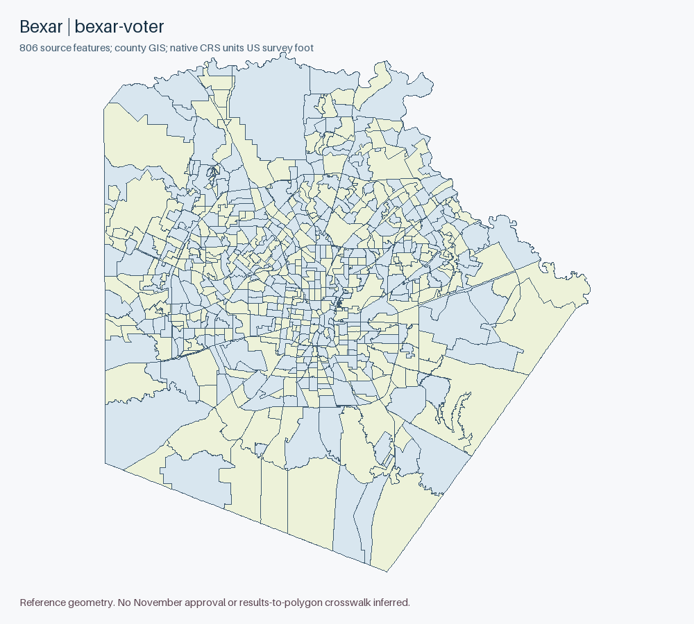

← Texas offline indexBexar County
Priority 4 of34 48029 • 744,090 accepted2024 Senate candidate votes
County GIS has806 features and all IDs were acquired; TLC24G has776,26P806. TLC26P precinct4110 has a self-intersection, while the separately acquired county GIS has no invalid linear geometry. Clarity127291 is non-test but allzero. These are source-specific universes, not an approved crosswalk.
Complete county reference boundaries
Each ZIP copies every source SHP geometry body and DBF record verbatim. Only SHP/SHX headers, record numbering and county bounds are rebuilt. All attributes, rings and vertices remain; no simplification, topology repair or vote allocation. Native CRS: NAD83 Texas Lambert Conformal Conic, metre, X=easting/Y=northing.
Actual county originals
County GIS bexar-voter • 806 features
Complete pre/post IDs, counts and batch audit • Native CRS, invalid geometry, Z/M and overlap diagnostics
Original full-precision query pages, all attributes; concatenate features using the audited IDs. No GeoJSON reprojection or curve linearization is used for originals.

Source routes and precise access outcomes
Native reporting compatibility
4534 source-scoped reporting identities accounted: {"unknown": 1584, "ambiguous": 2346, "administrative/no-polygon": 604}. Exact literal ID overlap is ambiguous, not an approved crosswalk. Test/older election classes, vote centers and administrative groups remain separate.
All identity-by-identity diagnostics • Full accepted constituent inventory